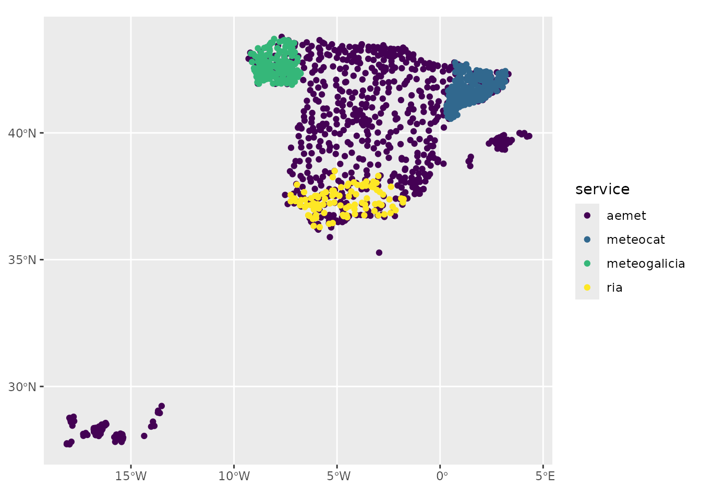

library(meteospain)
library(sf)
#> Linking to GEOS 3.10.2, GDAL 3.4.1, PROJ 8.2.1; sf_use_s2() is TRUE
library(purrr)
library(dplyr)
#>
#> Attaching package: 'dplyr'
#> The following objects are masked from 'package:stats':
#>
#> filter, lag
#> The following objects are masked from 'package:base':
#>
#> intersect, setdiff, setequal, union
library(ggplot2)
library(units)
#> udunits database from /usr/share/xml/udunits/udunits2.xml
# provide keys for aemet and meteocat if not done already
# keyring::key_set('aemet')
# keyring::key_set('meteocat')meteospain aims to return stations data in a compatible
format between services. This means:
sf object.This ease combining data from different services. Let’s see an example.
We are gonna download daily data for April, 2020 for all services providing this information, and combine them in one object:
Don’t forget to store the keys for AEMET and MeteoCat if not done already (see code above)
aemet_daily <- get_meteo_from(
'aemet', aemet_options(
'daily', start_date = as.Date('2020-04-01'), end_date = as.Date('2020-04-30'),
api_key = keyring::key_get('aemet')
)
)
#> © AEMET. Autorizado el uso de la información y su reproducción citando a AEMET como autora de la misma.
#> https://www.aemet.es/es/nota_legal
meteocat_daily <- get_meteo_from(
'meteocat',
meteocat_options('daily', start_date = as.Date('2020-04-01'), api_key = keyring::key_get('meteocat'))
)
#> Warning: Specifying the `id_cols` argument by position was deprecated in tidyr 1.3.0.
#> ℹ Please explicitly name `id_cols`, like `id_cols = -"variable_code"`.
#> ℹ The deprecated feature was likely used in the meteospain package.
#> Please report the issue at <https://github.com/emf-creaf/meteospain/issues>.
#> Data provided by meteo.cat © Servei Meteorològic de Catalunya
#> https://www.meteo.cat/wpweb/avis-legal/#info
meteogalicia_daily <- get_meteo_from(
'meteogalicia',
meteogalicia_options('daily', start_date = as.Date('2020-04-01'), end_date = as.Date('2020-04-30'))
)
#> A información divulgada a través deste servidor ofrécese gratuitamente aos cidadáns para que poida ser
#> utilizada libremente por eles, co único compromiso de mencionar expresamente a MeteoGalicia e á
#> Consellería de Medio Ambiente, Territorio e Vivenda da Xunta de Galicia como fonte da mesma cada vez
#> que as utilice para os usos distintos do particular e privado.
#> https://www.meteogalicia.gal/web/informacion/notaIndex.action
ria_daily <- get_meteo_from(
'ria',
ria_options('daily', start_date = as.Date('2020-04-01'), end_date = as.Date('2020-04-30'))
)
#> Some stations didn't return data for some dates:
#> https://www.juntadeandalucia.es/agriculturaypesca/ifapa/riaws/datosdiarios/forceEt0/21/104/2020-04-01/2020-04-30,
#> https://www.juntadeandalucia.es/agriculturaypesca/ifapa/riaws/datosdiarios/forceEt0/18/9/2020-04-01/2020-04-30,
#> https://www.juntadeandalucia.es/agriculturaypesca/ifapa/riaws/datosdiarios/forceEt0/29/3/2020-04-01/2020-04-30,
#> https://www.juntadeandalucia.es/agriculturaypesca/ifapa/riaws/datosdiarios/forceEt0/29/5/2020-04-01/2020-04-30,
#> https://www.juntadeandalucia.es/agriculturaypesca/ifapa/riaws/datosdiarios/forceEt0/21/1/2020-04-01/2020-04-30,
#> https://www.juntadeandalucia.es/agriculturaypesca/ifapa/riaws/datosdiarios/forceEt0/41/4/2020-04-01/2020-04-30,
#> https://www.juntadeandalucia.es/agriculturaypesca/ifapa/riaws/datosdiarios/forceEt0/21/106/2020-04-01/2020-04-30,
#> https://www.juntadeandalucia.es/agriculturaypesca/ifapa/riaws/datosdiarios/forceEt0/23/9/2020-04-01/2020-04-30,
#> https://www.juntadeandalucia.es/agriculturaypesca/ifapa/riaws/datosdiarios/forceEt0/41/1/2020-04-01/2020-04-30,
#> https://www.juntadeandalucia.es/agriculturaypesca/ifapa/riaws/datosdiarios/forceEt0/23/10/2020-04-01/2020-04-30,
#> https://www.juntadeandalucia.es/agriculturaypesca/ifapa/riaws/datosdiarios/forceEt0/23/13/2020-04-01/2020-04-30,
#> https://www.juntadeandalucia.es/agriculturaypesca/ifapa/riaws/datosdiarios/forceEt0/4/3/2020-04-01/2020-04-30,
#> https://www.juntadeandalucia.es/agriculturaypesca/ifapa/riaws/datosdiarios/forceEt0/14/3/2020-04-01/2020-04-30,
#> https://www.juntadeandalucia.es/agriculturaypesca/ifapa/riaws/datosdiarios/forceEt0/21/107/2020-04-01/2020-04-30,
#> https://www.juntadeandalucia.es/agriculturaypesca/ifapa/riaws/datosdiarios/forceEt0/18/4/2020-04-01/2020-04-30,
#> https://www.juntadeandalucia.es/agriculturaypesca/ifapa/riaws/datosdiarios/forceEt0/11/8/2020-04-01/2020-04-30,
#> https://www.juntadeandalucia.es/agriculturaypesca/ifapa/riaws/datosdiarios/forceEt0/11/3/2020-04-01/2020-04-30,
#> https://www.juntadeandalucia.es/agriculturaypesca/ifapa/riaws/datosdiarios/forceEt0/11/9/2020-04-01/2020-04-30,
#> https://www.juntadeandalucia.es/agriculturaypesca/ifapa/riaws/datosdiarios/forceEt0/4/9/2020-04-01/2020-04-30,
#> https://www.juntadeandalucia.es/agriculturaypesca/ifapa/riaws/datosdiarios/forceEt0/41/6/2020-04-01/2020-04-30,
#> https://www.juntadeandalucia.es/agriculturaypesca/ifapa/riaws/datosdiarios/forceEt0/41/14/2020-04-01/2020-04-30
#>
#> Data provided by Red de Información Agroclimática de Andalucía (RIA)
#> https://www.juntadeandalucia.es/agriculturaypesca/ifapa/riaweb/web/Now we have all daily data for April, lets join them. We are gonna
use the purrr package to do it in one pipe.
Here we convert the data to tibble before the join, that way we are not
joining by the spatial data, but by timestamp and the stations metadata.
After the join we convert back to sf.
april_2020_spain <- list(
dplyr::as_tibble(aemet_daily),
dplyr::as_tibble(meteocat_daily),
dplyr::as_tibble(meteogalicia_daily),
dplyr::as_tibble(ria_daily)
) %>%
purrr::reduce(dplyr::full_join) %>%
sf::st_as_sf()
#> Joining with `by = join_by(timestamp, service, station_id, station_name,
#> station_province, altitude, mean_temperature, min_temperature, max_temperature,
#> precipitation, mean_wind_speed, geometry)`
#> Joining with `by = join_by(timestamp, service, station_id, station_name,
#> station_province, altitude, mean_temperature, min_temperature, max_temperature,
#> precipitation, mean_wind_speed, insolation, geometry, mean_relative_humidity,
#> min_relative_humidity, max_relative_humidity, mean_wind_direction)`
#> Joining with `by = join_by(timestamp, service, station_id, station_name,
#> station_province, altitude, mean_temperature, min_temperature, max_temperature,
#> precipitation, mean_wind_speed, geometry, mean_relative_humidity,
#> min_relative_humidity, max_relative_humidity, mean_wind_direction)`
april_2020_spain
#> Simple feature collection with 20502 features and 19 fields (with 180 geometries empty)
#> Geometry type: POINT
#> Dimension: XY
#> Bounding box: xmin: -17.91528 ymin: 27.73583 xmax: 4.215556 ymax: 43.78611
#> Geodetic CRS: WGS 84
#> # A tibble: 20,502 × 20
#> timestamp service station…¹ stati…² stati…³ altit…⁴ mean_…⁵ min_t…⁶
#> <dttm> <chr> <chr> <chr> <chr> [m] [°C] [°C]
#> 1 2020-04-01 00:00:00 aemet 0016A REUS A… TARRAG… 71 10.6 9.2
#> 2 2020-04-01 00:00:00 aemet 0076 BARCEL… BARCEL… 4 11.7 10.4
#> 3 2020-04-01 00:00:00 aemet 0149X MANRESA BARCEL… 291 9.7 7.8
#> 4 2020-04-01 00:00:00 aemet 0200E BARCEL… BARCEL… 408 8.4 7.1
#> 5 2020-04-01 00:00:00 aemet 0201D BARCEL… BARCEL… 6 11 9.6
#> 6 2020-04-01 00:00:00 aemet 0252D ARENYS… BARCEL… 74 10.6 9.4
#> 7 2020-04-01 00:00:00 aemet 0255B SANTA … BARCEL… 40 9 7.8
#> 8 2020-04-01 00:00:00 aemet 0324A RIPOLL GIRONA 675 6.4 4.8
#> 9 2020-04-01 00:00:00 aemet 0367 GIRONA… GIRONA 143 8.9 7.8
#> 10 2020-04-01 00:00:00 aemet 0372C PORQUE… GIRONA 157 8.2 6.9
#> # … with 20,492 more rows, 12 more variables: max_temperature [°C],
#> # precipitation [L/m^2], mean_wind_speed [m/s], insolation [h],
#> # geometry <POINT [°]>, mean_relative_humidity [%],
#> # min_relative_humidity [%], max_relative_humidity [%],
#> # mean_wind_direction [°], global_solar_radiation [MJ/m^2],
#> # solar_radiation [MJ/d/m^2], under_plastic <lgl>, and abbreviated variable
#> # names ¹station_id, ²station_name, ³station_province, ⁴altitude, …We can visualize the data, only one day.
april_2020_spain %>%
dplyr::filter(lubridate::day(timestamp) == 25) %>%
units::drop_units() %>%
ggplot(aes(colour = service)) +
geom_sf() +
scale_colour_viridis_d()
april_2020_spain %>%
dplyr::filter(lubridate::day(timestamp) == 25) %>%
units::drop_units() %>%
ggplot(aes(colour = mean_temperature)) +
geom_sf() +
scale_colour_viridis_c()